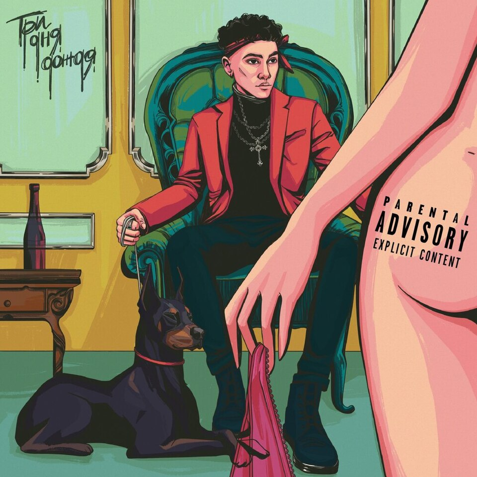

Фритрек и нулевой спринт: Подготовка к работе
</на старт>

Это было самое начало пути. На этом этапе важно было проникнуться основами и настроиться на учёбу. И, возможно, подумать, как новые знания могут повлиять на ваше будущее.
Это было время, когда сомнения в принятом решении перекрываются уверенностью в том, что я всё делаю правильно.